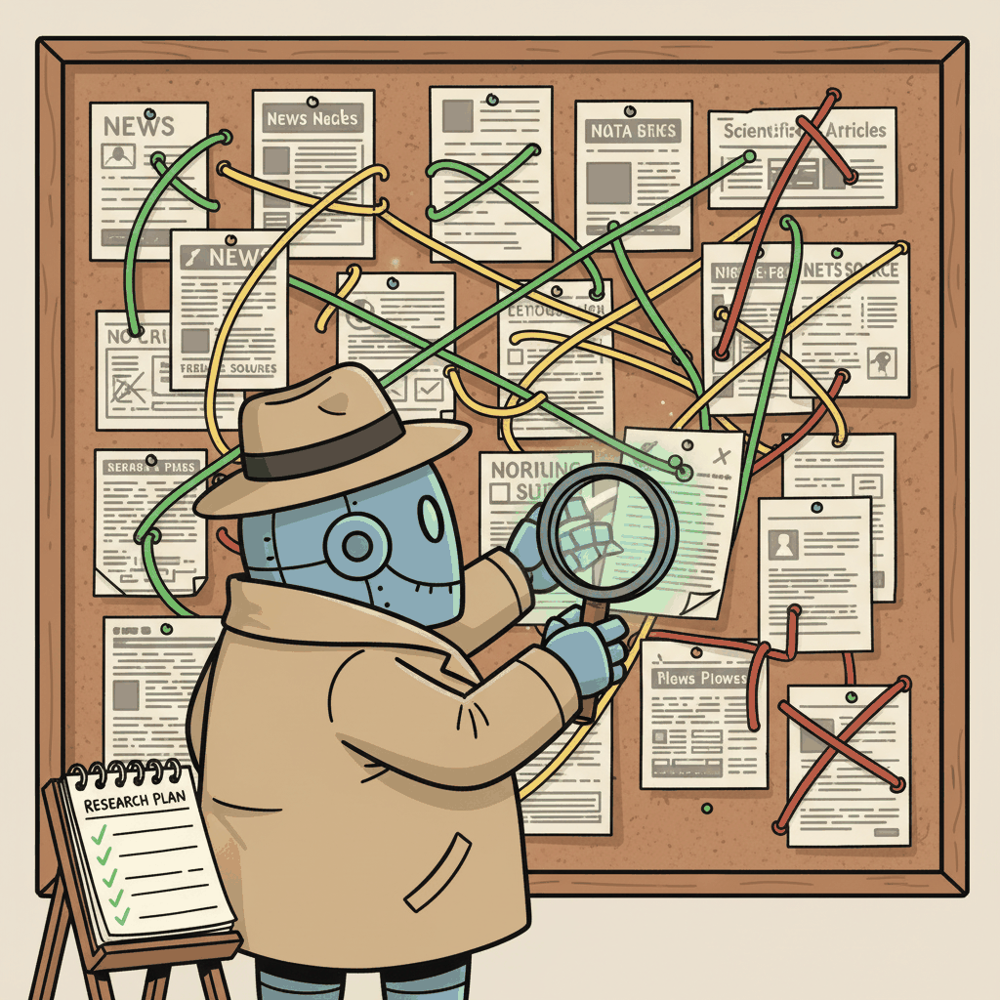

"Data does not speak for itself. It needs an agent who can read, query, plot, and then explain what it all means."
Agent X, Methodically Analytical AI Agent
Research and data analysis agents turn the agentic loop into a systematic investigation process. Unlike simple RAG systems that retrieve and summarize, research agents plan their investigation strategy, execute multi-step information gathering, evaluate source quality, identify gaps, and produce comprehensive reports with citations. Data analysis agents extend this to structured data: they write and execute code, generate visualizations, and iterate on their analysis until the results are sound. This section covers deep research architectures (as seen in OpenAI Deep Research and Gemini Deep Research), data analysis agent patterns, and the quality control mechanisms that separate reliable agents from unreliable ones.
Prerequisites
This section builds on agent foundations from Chapter 26, tool use from Chapter 27, and multi-agent patterns from Chapter 28.

29.3.1 Deep Research Agents
Research agents automate the process of gathering, analyzing, and synthesizing information from multiple sources. Unlike simple RAG systems that retrieve and summarize, research agents plan their research strategy, execute multi-step information gathering, evaluate source quality, identify gaps in their findings, and produce comprehensive reports with citations. This mirrors how a human researcher works: formulate a question, search for sources, read and evaluate them, identify what is still missing, search again, and synthesize.
The plan-and-execute architecture from Section 29.2 is the natural fit for research agents. The planning phase generates a research outline with specific questions to answer. The execution phase uses search tools (web search, academic search, database queries) to find relevant sources for each question. A synthesis phase combines findings into a coherent report. A reflection phase identifies gaps and triggers additional research cycles. OpenAI's Deep Research and Gemini's Deep Research features implement this pattern at scale.
Quality control is the critical differentiator between good and poor research agents. Effective research agents implement source credibility scoring (preferring academic papers over blog posts, primary sources over secondary ones), cross-reference verification (checking claims against multiple independent sources), recency filtering (prioritizing recent information for fast-moving topics), and explicit uncertainty flagging (noting when findings conflict or when evidence is limited).
Who: A solutions architect at a mid-size SaaS company tasked with selecting a vector database for their new semantic search feature.
Situation: The architect needed a comprehensive competitive analysis of the top 5 vector database providers, covering pricing, performance benchmarks, supported index types, cloud integrations, and recent funding. The last manual competitive analysis had taken two analysts an entire week.
Problem: Information was scattered across vendor websites, GitHub repositories, blog posts, benchmark reports, and Crunchbase. No single source provided a complete comparison, and some vendors published benchmark data while others did not, making apples-to-apples comparison difficult.
Decision: The architect deployed a research agent using a plan-execute-reflect loop. The agent generated a research outline, executed 47 web searches, read 23 pages, extracted data into structured comparison tables, and ran a reflection pass that identified two providers lacking public benchmark data (flagged as a gap requiring vendor outreach).
Result: The agent produced a 3,000-word report with comparison tables, sourced claims, and an explicit "limitations" section in 45 minutes. The architect spent an additional 2 hours verifying key claims and adding internal context, for a total of under 3 hours compared to the previous week-long manual process.
Lesson: Research agents provide the most value when they explicitly flag gaps and uncertainties rather than papering over missing data, because the human reviewer can then focus verification effort on the areas that matter most.
Research agents reveal a fundamental asymmetry in intelligence: synthesis is harder than analysis. A single web search is trivial; reading one paper is straightforward. But combining findings from dozens of sources, detecting contradictions, identifying what is missing, and weighting evidence by credibility requires the kind of recursive, self-correcting reasoning that separates genuine research from mere retrieval. This is why the plan-execute-reflect loop is essential: research is not a pipeline with a fixed number of steps, but an expanding search through an information space whose boundaries you discover only by exploring it.
29.3.2 Data Analysis Agents
Data analysis agents combine natural language understanding with code execution to answer questions about data. The user asks a question in plain language ("What was our churn rate by cohort last quarter?"), the agent writes Python or SQL code to analyze the data, executes the code in a sandbox, interprets the results, and presents findings with visualizations. This is the code agent pattern from Section 29.1 specialized for analytical workflows.
The key architectural decision is how the agent accesses data. Direct database access (the agent writes SQL) is the most flexible but requires careful security controls to prevent destructive queries. Pre-loaded DataFrames (the agent writes pandas code against data already loaded in the sandbox) are simpler and safer but limit the agent to the pre-loaded data. API-based access (the agent calls analytics APIs) provides the best security but limits the types of analysis possible. Most production deployments use a combination: SQL for data extraction, pandas for analysis, and matplotlib/plotly for visualization.
# Data analysis agent with sandboxed code execution
from e2b_code_interpreter import Sandbox
def analyze_data(question: str, data_description: str) -> dict:
sandbox = Sandbox()
# Upload the data to the sandbox
sandbox.files.write("/data/sales.csv", sales_data)
# Generate and execute analysis code
code = llm.invoke(
f"Write Python code to answer this question about the data:\n"
f"Question: {question}\n"
f"Data description: {data_description}\n"
f"The data is available at /data/sales.csv\n"
f"Use pandas for analysis and matplotlib for any charts.\n"
f"Save charts to /output/chart.png\n"
f"Print the answer clearly at the end."
)
result = sandbox.run_code(code.content)
return {
"answer": result.text,
"chart": sandbox.files.read("/output/chart.png") if result.text else None,
"code": code.content,
}A complete data analysis agent in 8 lines with smolagents (pip install smolagents):
from smolagents import CodeAgent, HfApiModel
agent = CodeAgent(
tools=[], # CodeAgent can write and run pandas/matplotlib natively
model=HfApiModel(),
additional_authorized_imports=["pandas", "matplotlib"],
)
result = agent.run(
"Load /data/sales.csv, compute monthly revenue totals, "
"and plot a bar chart. Save the chart to /output/chart.png."
)29.3.3 Scientific Discovery Agents
At the frontier of research agents are systems designed for scientific discovery: generating hypotheses, designing experiments, analyzing results, and proposing new research directions. These agents are being deployed in drug discovery, materials science, and genomics, where the volume of literature and data exceeds any human's ability to synthesize. FutureHouse's Robin agent, for example, can propose novel protein engineering strategies by synthesizing knowledge across thousands of papers.
Scientific agents face unique challenges around reproducibility, uncertainty quantification, and domain expertise. A research agent that confidently states an incorrect finding could waste months of laboratory work. Production scientific agents therefore implement aggressive uncertainty quantification, require citations for every claim, flag when they are extrapolating beyond their training data, and always present findings as hypotheses to be verified rather than conclusions.
Research agents can produce plausible-sounding but incorrect analyses, especially when they hallucinate sources or misinterpret statistical results. Always verify agent-produced research against primary sources before making decisions based on it. Implement citation verification (check that cited URLs exist and contain the claimed information) and statistical sanity checks (verify that reported numbers are within plausible ranges).
Exercises
Describe the architecture of a deep research agent. What distinguishes it from a simple RAG system, and what components are necessary for multi-step research?
Answer Sketch
A deep research agent goes beyond single-query retrieval. It decomposes research questions into sub-questions, searches multiple sources, evaluates and cross-references findings, identifies gaps, and iterates until the question is thoroughly answered. Required components: a planner (decomposes questions), a search tool (web, papers, databases), a note-taking system (accumulates findings), and a synthesizer (produces the final report with citations).
Write a prompt template for a data analysis agent that receives a CSV file path and a natural language question. The agent should generate Python code to analyze the data, execute it in a sandbox, and interpret the results.
Answer Sketch
The prompt should include: (1) instructions to first read column names and data types, (2) generate pandas code for the analysis, (3) execute the code and capture output, (4) interpret numerical results in plain language. Include safety instructions: do not modify the original file, handle missing values, and validate results with sanity checks before reporting.
A research agent cites sources in its report. Design a verification pipeline that checks whether each citation actually supports the claim it is attached to.
Answer Sketch
For each claim-citation pair: (1) retrieve the cited source, (2) extract the relevant passage, (3) use an LLM to evaluate whether the passage supports the claim (supports, contradicts, or is unrelated), (4) flag unsupported claims for human review. Also check: does the cited paper exist? Is the author attribution correct? Is the year correct? This catches hallucinated citations.
Implement a research agent that searches three sources (arXiv, Wikipedia, and a web search engine) for information on a given topic, deduplicates findings, and produces a structured summary with source attribution.
Answer Sketch
Create async tool functions for each source. Search all three in parallel. For each result, extract key claims and tag with the source. Use embedding similarity to identify duplicate claims across sources. Group unique claims into themes. Produce a structured summary with inline citations: 'Claim X (arXiv:2301.xxxxx, also confirmed by Wikipedia).
Discuss the potential and limitations of AI agents for scientific discovery. Can an agent genuinely discover new knowledge, or is it limited to finding patterns in existing literature?
Answer Sketch
Agents can: synthesize findings across papers that human researchers might miss, identify gaps in the literature, generate hypotheses based on pattern recognition, and automate routine analyses. Limitations: agents cannot run physical experiments, they may confuse correlation with causation, they can hallucinate plausible-sounding but incorrect claims, and they lack the deep domain intuition that guides human researchers toward fruitful directions.
- Deep research agents plan multi-step research strategies, unlike RAG pipelines that execute a single retrieve-generate cycle.
- Key phases include query decomposition, multi-source search, evaluation, synthesis, and gap identification.
- Deep research agents are suited for complex, open-ended questions that require information from multiple sources.
Show Answer
Deep research agents actively plan research strategies, formulate multiple search queries, evaluate and synthesize information from diverse sources, identify knowledge gaps, and iterate until a comprehensive answer is assembled. RAG pipelines execute a single retrieve-generate cycle without strategic planning.
Show Answer
Typically: (1) query decomposition (break complex question into sub-questions), (2) multi-source search (search the web, databases, and documents), (3) evaluation and filtering (assess relevance and reliability), (4) synthesis (combine findings into a coherent report), and (5) gap identification (determine if more research is needed).
Further Reading
What Comes Next
In the next section, Section 29.4: Code/Work Workflows and Agentic Coding Systems, we distill the cross-cutting design patterns that apply across all specialized agent domains.